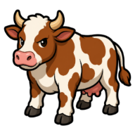
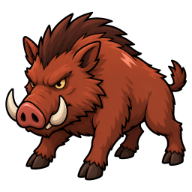
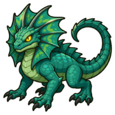
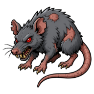
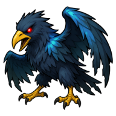
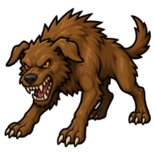
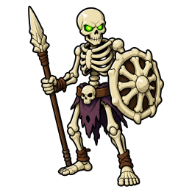

Bones
Other
| Property | Value |
|---|---|
| Value | 5 coins |
| Stacks | Yes |
Dropped by
| Monster | Level | Amount | Chance |
|---|---|---|---|
 Cow | 2 | 1 | Always |
 Wild Boar | 12 | 1 | Always |
 Cave Basilisk | 44 | 1 | Always |
 Grave Rat | 3 | 1 | Always |
 Corpse Crow | 5 | 1 | Always |
 Feral Hound | 8 | 1 | Always |
 Bone Sentinel | 72 | 3–6 | Always |
| 90 | 5–10 | Always |
Prayers
- ✝️ Minor Ward: Prayer 1, uses 5
- 🎯 Minor Focus: Prayer 1, uses 5
- 💪 Minor Vigor: Prayer 1, uses 5
Quests
- 🐀 Rat's Nest: hand in 3